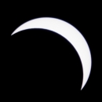

Napfogyatkozás 2006. Törökország
Napfogyatkozás előtt elég sok (többnyire angol nyelvű) weboldalt olvastam végig, hogy megtudjam, pontosan miként is kell napfogyatkozást fényképezni. Mivel napfogyatkozást elég ritkán fotózhatunk, ezért a tapasztalataimat összeírom ezen az oldalon, hátha segít másoknak. (Vagy esetleg később nekem) A képekről nem feltétlenül az elkészítés sorrendjében írok, remélem ez senkit sem zavar meg.
Hely, idő
2006. március 29. Bár a Föld több pontjáról is látszott (részletesebb térkép itt), Magyarországhoz legközelebb Törökországból volt látható. Az észlelési hely Törökország Side nevű városában (Manavgathoz közel) a tengerparton volt.
Szűrőfólia
A totalitást leszámítva a nap fényképezéséhez mindig szűrőfóliát kell használni. Én Baader Astrosolar fóliát használtam, amit a távcső kft. boltjában vásároltam. Az így elkészített szűrő elég sérülékenynek tűnik, én kis dobozban szállítottam a repülőút során. Próbálkoztam egy masszívabb szűrő készítésével is, 6x6-os Gepe üveges diakeretbe helyeztem astrosolar fóliát, így egy jóval kevésbé sérülékeny, ám a tesztfotók alapján eléggé használhatatlan szűrőt kaptam.
Figyelmeztetés
Egy olvasó jelezte, hogy lemaradt a figyelmeztetés: A totalitás fázisát kivéve szűrőfólia nélkül ne nézz a napba, pláne ne távcsővel!
Multiexpó részleges fázisokkal, totalitással
{kind=link}
A képen egyszerre látható a részleges fázis több képe, és a totalitás. A kép bal oldalán szépen látható a folyamat, ahogy a hold egyre inkább eltakarja a napot, középen a totalitás, jobb oldalon a folyamat, ahogy a nap újra egyre jobban látszik. A kép elkészítéséhez semmilyen digitális trükköt nem alkalmaztam, egyetlen negatívkockára exponáltam több képet.
Felszerelés
A kép elkészítéséhez egy olyan gép kell, amelyik képes egy kockára többet exponálni. Én egy manuális Revue AC-5 gépet használtam (ez a gép lényegében azonos a Chinon CP-7m géppel, csak más piacra gyártották). Egy alap 50mm-es objektív ( SMC PENTAX-A 50mm f2 ) volt a gépen.
ISO 400-as film, 8-as rekesz, expozíciós idő a részleges fázisoknál 1/30 mp, a totalitásnál 1/2 mp. Az egyes expozíciók között 15 perc telt el. A gépnek az expozíciók között mozdulatlannak kell lennie, ezért természetesen állványt használtam, és figyeltem, hogy a kép elkészítése során (kb. 2.5 óra) senki ne rúgjon bele az állványba.
Felkészülés
A részleges fázisok fotózására elég jól fel lehet készülni napfogyatkozás nélkül is. A szűrő tesztelésén kívül három dolgot kell eldönteni:
- Rekesz: "F8 and be there" alapján 8-as rekeszel próbálkoztam először, és ez jó eredményt adott. (22-es rekesznél már eléggé csillagszerűnek tűnt a nap a képen)
- Részleges fázisok expozíciós ideje: Úgy vettem észre, az a legjobb, ha 1 fényértékkel alulexponálom a képet. (A fénymérés 1/15-öt mutatott, ezért lett ehelyett 1/30). Több weboldalon azt ajánlották, hogy a totalitáshoz közel kicsit növeljük meg az expozíciós időt. Én azonos idővel fényképeztem.
- Expozíciók gyakorisága: A tesztek alapján akár 5 percenként is készülhettek volna a képek, akkor sem érintkeznének a napok. Az ilyen gyakori expozíció nagy veszélye, hogyha éppen felhős az ég, akkor vagy ki kell hagynunk egy expozíciót (ez elég furcsán mutatna a képen), vagy 1-2 perccel később kell exponálunk. 2 perces csúszás nem túl feltűnő, ha 15 percenként készülnek a képek, de nagyon zavaró, ha 5 percenként. Mivel ebből képből csak egyetlen egyet tudtam készíteni a fogyatkozás során, ezért nem kockáztattam, és 15 percenként exponáltam (Revue AC-5-nél ezt automatikusan be lehet állítani egy távkioldó segítségével). Utólag nézve már tudom, hogy végig szép volt az idő, így akár 10 percet is választhattam volna.
Az expozíciók időzítésénél a totalitás idejéből kell kiindulni, onnan visszaszámolni a 15 perceket, hogy a képen a totalitás is látszódjék.
Napfogyatkozás nélkül nem lehet tesztelni, de el kellett dönteni, milyen expozíciós időt használjak a totalitás alatt (totalitás alatt szűrő nélkül kell exponálni). Több weboldalt is megnézve az 1/2 mp mellett döntöttem, az eredményt látva ez kissé hosszú lett. Rövidebb időnél az ég valószínűleg teljesen fekete lett volna (a számítógép képernyőjén nem biztos hogy látszik, de az ég a képen nem fekete, hanem mélykék), így esetleg egy olyan plusz expozíció is kellett volna, amikor a nap már nem látszik, csak az ég.
Megjegyzések
Az ehhez hasonló képeket gyakran úgy készítik el, hogy az ég világosabb legyen, és az előtérben valami szép épület vagy fa sziluettje látszódjon. Mivel a nap a fogyatkozás során nagyon magasan volt (és szép épület, fa sem volt a tengerparton), ezért én ezzel nem próbálkoztam.
Igen gyakran az ilyen képeket digitálisan készítik több kép felhasználásával (1 kép a részleges fázisnak, 1 kép a totalitásnak, 1 kép az épületnek). Nyilván egyszerűbb a képet több képből összeilleszteni, de nekem érdekesebbnek tűnt egyetlen kockára exponálni.
Részleges fázis
{kind=link}
{kind=link}

{kind=link}

{kind=link}

{kind=link}
Ezeken a képeken a részleges fázis fokozatai látszódnak.
Felszerelés
Ezek a képek is állványról készültek, a már korábban említett szűrőfóliával. Pentax MZ-5 fényképezőgépet használtam, de bármely cserélhető objektíves gép megfelelő lett volna a célra. Ezeknél a képeknél a legfontosabb az objektív, én egy kölcsönbe kapott (Kösz Levi) Sigma 600/8 tükörobjektívet használtam egy kétszerezővel (vagyis ez 1200/16-nak felelt meg).
{kind=link}
{kind=link}
Felkészülés
Ezekre a képekre elég jól fel lehet készülni, hiszen a részleges fázisokat ugyanúgy fotózhatjuk, mint a teljes napot. Részleges napfogyatkozásnál pedig még alaposabban tesztelhetünk mindent.
Mivel a részleges fázis elég sokáig tart, nagyon sok képet készíthetünk (én végül 2 tekercset lőttem el, egyet a totalitás előtt, egyet utána), akár eltérő expozíciós idővel is. A tesztjeim nem mutattak látható különbséget akkor sem, ha 1-2 fényértékkel alá vagy fölé exponáltam, így a fénymérésre hagyatkozva az első 4 kép ISO400-as filmre 1/500 mp expozíciós idővel készült. Az utolsó 4 kép ISO100-as filmre ugyanúgy 1/500 idővel készült. A 2 fényérték különbségét én nem látom az elkészült képeken. Egy-két esetben 1-1 fényértékkel eltértem, és 1/1000, 1/250 értékeket is használtam, de itt sem látható igazából különbség.
Megjegyzések
- Meglepően nehéz 1200mm-es objektívnél a napot megtalálni. Én végül a 600 mm-es objektívvel találtam meg, majd utána tettem fel a kétszerezőt.
- Látszik a képeken, hogy más szögben "harap bele" a hold a napba, mint a fenti multiexpós képen. Ennek az az oka, hogy a fényképezőgép ferdén volt feltéve az objektívre (ekkora objektívnél az objektív van az állványra csavarozva, és a fényképezőgépet tehetjük fel az objektív végére). Ez nem túl szerencsés, de így sikerült, legközelebb, majd jobban figyelek erre is.
- A nap igen gyorsan (1-2 perc alatt) kimegy a látótérből, és újra kell igazítani a fényképezőgépet. Ha ügyesebben forgatom a gépet, akkor ez akár 3-4 perc is lett volna. Az igazi megoldás persze egy csillagászati távcső lett volna állvánnyal, azok jobban fel vannak készítve erre.
Totalitás, napkorona
{kind=link}
{kind=link}
{kind=link}
{kind=link}
A totalitás alatt a napkorona látható a képeken. A negatív (dia, CCD) érzékelőjének nem elég nagy a dinamikája, ezért különböző expozíciós idővel több képet érdemes készíteni.
Felszerelés
A felszerelés ugyanaz mint a részleges fázisnál (a már korábban említett állvány, Pentax MZ-5, Sigma tükörobjektív kétszerezővel). Természetesen ilyenkor szűrőt nem kell használni. A fenti képek ISO400-as filmre készültek rendre 1/1000, 1/250, 1/60, 1/30 mp expozícióval
Felkészülés
Hát erre nem igazán lehet felkészülni. Expozíció-sorozatot érdemes lőni, én 1/1000 másodperctől 1/2 másodpercig készítettem 10 képet. (Ennyi képből csak sikerül néhány) A hosszabb expozíciós időknél már kissé bemozdul a nap. Ha viszonylag lassan is készítjük a képeket (2-3 másodpercenként), akkor is végzünk a sorozattal fél perc alatt, ami bőven belefért a 3:47-es totalitásba. Ennyi idő alatt még a nap sem "mászik ki" a képből.
Megjegyzések
A részleges fázishoz képest semmi új nincs.
Gyémántgyűrű, Baily-féle gyöngyfüzér
{kind=link}
{kind=link}
Ahogy a hold egyre nagyobb részt takar ki a napból, egy idő után már csak a hold völgyein süt keresztül a nap, ilyenkor a látvány egy gyöngyfüzérhez hasonlít. Amikor már csak 1 ponton süt át a nap, egy gyémántgyűrűhöz hasonló a jelenség.
Felszerelés
A felszerelés ugyanaz mint a részleges fázisnál és a napkoronánál (a már korábban említett állvány, Pentax MZ-5, Sigma tükörobjektív kétszerezővel). Természetesen ilyenkor szűrőt nem kell használni. Expozíciós időnek mindenhol mást ajánlottak, végül ISO400-as filmre 1/250 mp-vel fényképeztem.
Felkészülés
Erre sem lehet felkészülni. Napfogyatkozásonként 2 próbálkozási lehetőségünk van, a totalitás előtt, és a totalitás után. Bár elvileg másodperc pontossággal kiszámítható a második és harmadik konkaktus ideje, nekem mégis elég nehéz volt elkapnom a megfelelő pillanatot.
Megjegyzések
- A két próbálkozási lehetőségnél különböző expozíciós időket próbáltam (1/250, 1/125). Az eredmények azt mutatják, második próbálkozásra inkább rövidebb időt kellett volna kipróbálni (pl. 1/250 mellett 1/1000).
- Valójában a helyes expozíciós idő pillanatonként változik. Ez magyarázat arra, miért javasol mindenki más időt. A rendelkezésre álló idő rövidsége miatt arra esélyt sem láttam, hogy menet közben még módosítsam is az expozíciós időt.
- Sajnos a nap kissé "kimászott" a képből. A részleges fázisnál már írtam erről a problémáról. Ott ez még nem túl fontos, hiszen megvárhatjuk a megfelelő pillanatot, amikor az egész nap látszik, itt azonban sokkal pontosabban kell pozícionálni.